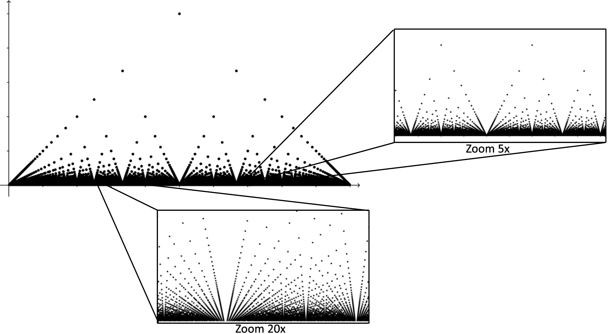

Thomae's function
Thomae's function
|
In 1875, the German mathematician Johannes Karl Thomae (1840-1921) published the book Einleitung In Die Theorie Der Bestimmten Integrale where he introduced a very simple but provocative example of a function continuous at each irrational in $(0,1)$ and discontinuous at each rational in $(0,1).$ |

|
|---|
Definition
Define $f \colon [0,1] \to \R$ by \begin{equation*} f(x) := \begin{cases} \dfrac{1}{q} & \text{if } x=\dfrac{p}{q} \text{ where } p,q \in \N \\ \quad & \text{and } \,p, q\, \text{ have no common divisors,}\\ \quad & \quad\\ 0 & \text{if } x \text{ is irrational.} \end{cases} \end{equation*}
Plot
Plot
GeoGebra script
n := 200
thomae := Sequence(Sequence((p / q, GCD(p, q) / q), p, 1, q - 1), q, 2, n)
GCD( number, number ):
Calculates the greatest common divisor of the two numbers.
Properties
Thomae's function is:
- continuous at each irrational in $(0,1)$.
- discontinuous at each rational in $(0,1)$.
- Riemann integrable on $[0,1]$ and $\displaystyle \int_0^1 f = 0.$
Properties
Lemma: If $a$ is a point in $(0,1)$, then $\displaystyle \lim_{x\ra a}f(x)=0$
Proof: For every $\epsilon>0$ choose an $N\in \N$ such that $1/N\lt \epsilon$.
Note that there are only finitely many rationals in lowest terms whose denominators are $N$ or smaller.
For example, the only fractions with denominator $5$ or smaller are \[ \left\{ \frac{1}{2}, \frac{1}{3}, \frac{2}{3}, \frac{1}{4}, \frac{3}{4}, \frac{1}{5}, \frac{2}{5}, \frac{3}{5}, \frac{4}{5} \right\} \]
Properties
Proof (cont): Because this collection is finite, we can find a $\delta>0$ small enough such that the interval $(a-\delta, a+\delta)$ lies within $(0,1)$ and contains none of these fractions.
Properties
Proof (cont): Now we choose any $x$ with $0\lt|x-a|\lt \delta$ and consider two cases.
Case 1 - If $x=\dfrac{p}{q}\,$ is a rational in lowest terms, then \[ |\,f(x)-0|=\left|\,f\left(\dfrac{p}{q}\right)\right|=\frac{1}{q}\lt \frac{1}{N}\lt \epsilon, \] because $q$ must be greater than $N$ if $\,\dfrac{p}{q} \in (a-\delta, a+\delta)$.
Properties
Proof (cont):
Case 2 - If $x$ is a irrational,
then
$|\,f(x)-0|=0\lt \epsilon$ as well.
In either case, for $\epsilon \gt 0$, we have found a $\delta>0$ such that, \[ \text{if }\, 0\lt|x-a|\lt\delta, \,\text{ then } \,|\,f(x)-0|\lt \epsilon. \] That is $\displaystyle \lim_{x\ra a}f(x)=0.$ $ \;\blacksquare$
Properties
Claim 1: Thomae's function is continuous at each irrational in $(0,1)$.
Proof: This follows inmediately because, if $a\in (0,1)$ is irrational, then \[ f(a) = 0 = \lim_{x\ra a} f(x) \;\text{ by the lemma}. \]
So $f$ is continuous at $a$. $ \;\blacksquare$
Properties
Claim 2: Thomae's function is discontinuous at each rational in $(0,1)$.
Proof: If $a=\dfrac{p}{q}\in (0,1)$ in lowest terms, then \[ f(a) = f\left(\dfrac{p}{q}\right) =\frac{1}{q} \neq \lim_{x\ra a} f(x), \] and so $f$ is discontinuous at $a$. $ \;\blacksquare$
Properties
Claim 3: Thomae's functions is Riemann integrable on $[0,1]$ and \[ \displaystyle \int_0^1 f = 0. \]
Because every subinterval of every partition $P$ of $[0, 1]$ contains irrational numbers, the lower sum $L(P,f)$ is 0.
Thus, to see that Thomae's function is Riemann integrable, we need to show that, given $\epsilon \gt 0$, we can find a partition $P$ with respect to which \[U ( P, f ) \lt \epsilon.\]
Properties
Claim 3: Thomae's functions is Riemann integrable on $[0,1]$ and $\displaystyle \int_0^1 f = 0.$
Proof:
Let $\epsilon>0$.
Choose $n$ so that $1/n\lt \epsilon$.
Let $x_0\lt x_1 \lt \cdots \lt x_m$ be those rational points $p/q$
in $[0,1]$, in lowest term, with $q\lt n$.
For example, the only fractions with denominator smaller than 7 are \[ \left\{ \frac{1}{2}, \frac{1}{3}, \frac{2}{3}, \frac{1}{4}, \frac{3}{4}, \frac{1}{5}, \frac{2}{5}, \frac{3}{5},\frac{4}{5}, \frac{1}{6}, \frac{5}{6}, \frac{6}{6}\right\} \]
Properties
Proof (cont):
Choose a partition $P$ such that
the intervals $[t_{i-1}, t_i]$ which contain
some $x_j$ have a total length $\lt \dfrac{\epsilon}{2}$.
On each of the other intervals we have $M_i\leq \dfrac{1}{n}\lt \dfrac{\epsilon}{2}$.
Properties
Proof (cont): Let $I_1$ denote all those $i$ for which $[t_{i-1},t_i]$ contains some $x_j$, and let $I_2$ denote all the other $i$.
Since $f(x)\leq 1$ for every $x\in[0,1]$, we have
$\displaystyle U(P,f) = \sum_{i\in I_1}M_i (t_i-t_{i-1}) +\sum_{i\in I_2}M_i (t_i-t_{i-1}) $
$\quad\qquad \displaystyle\leq 1\cdot \sum_{i\in I_1} (t_i-t_{i-1}) +\frac{\epsilon}{2}\sum_{i\in I_2} (t_i-t_{i-1}) $
$\displaystyle\leq 1\cdot \frac{\epsilon}{2} +\frac{\epsilon}{2}\cdot 1 $ $= \epsilon.\;\quad \blacksquare$